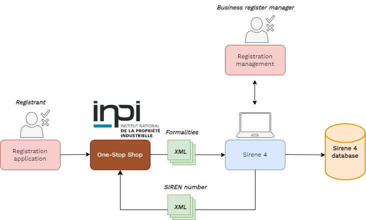
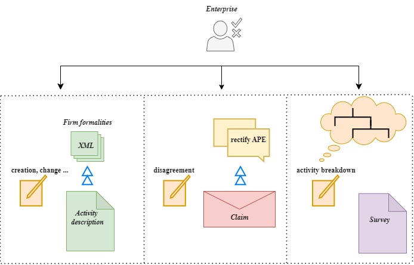
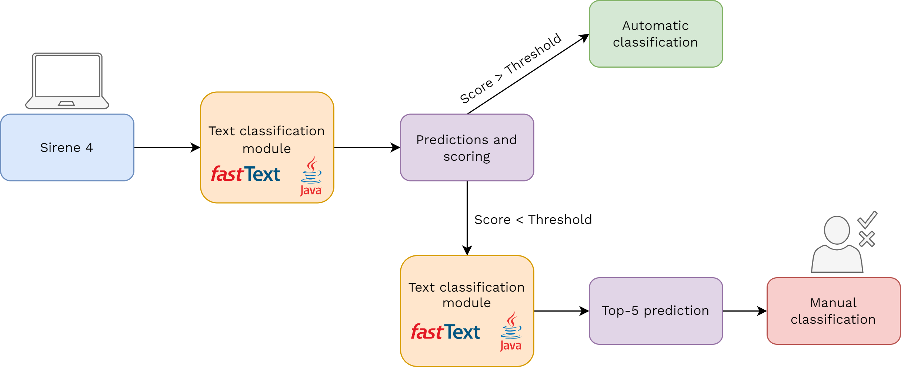
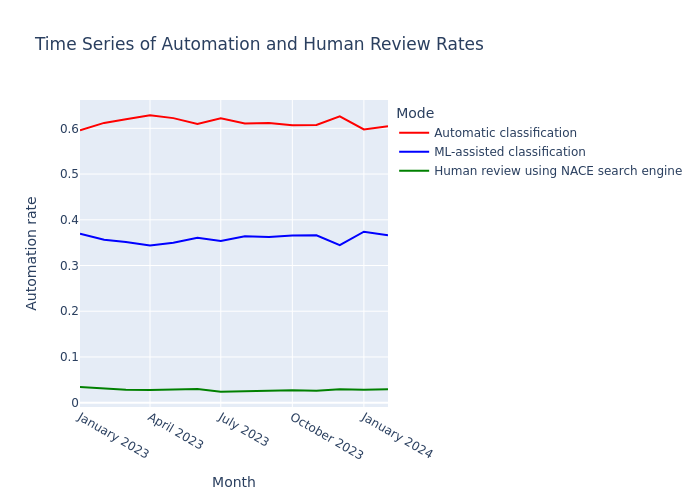
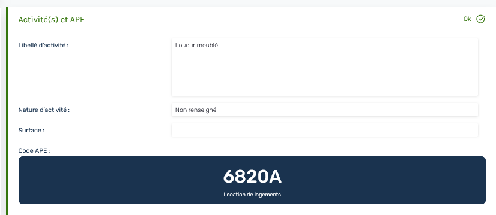
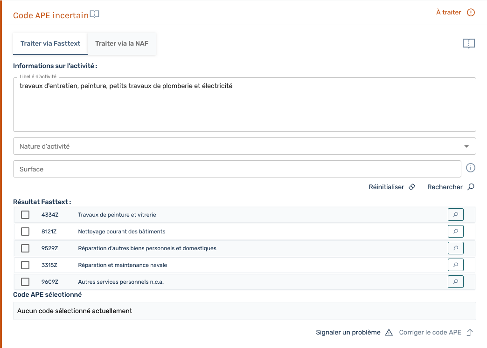
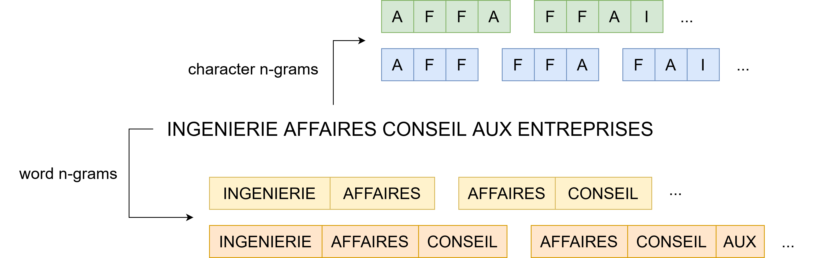
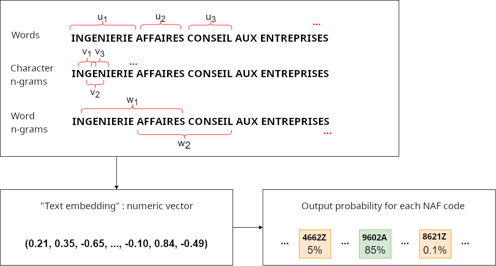
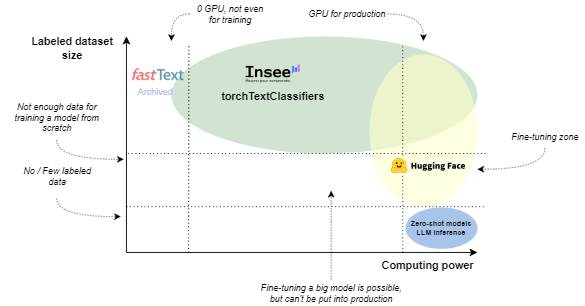

Classification of business activities by machine learning: the case of France
Webinar on automatic coding
18 March 2026
About me

- Who am I ?
- Data scientist at Insee
- INSEE statistician civil servant
- working now at the Business Statistics Directorate
- SIRENE business register
About my job
- I wear two hats:
- 🎩 Application Administrator: Acting as the functional lead for the SIRENE register. I bridge the gap between business needs and IT by writing functional specifications for system maintenance and evolution.
- 🧢 Data Scientist: Managing the end-to-end ML workflow for APE classification from model training and delivery to its integration into the production application.

Table of contents
1️⃣ Context
2️⃣ State of play: How do we assign activity codes today ?
3️⃣ Why did we end up using Machine Learning ?
4️⃣ fastText: a simple and efficient classifier
5️⃣ Beyond fastText: introducing TorchTextClassifiers
6️⃣ Questions ?
1️⃣ Context
What is SIRENE ?
System for the Identification of the Register of Enterprises and Establishments
Sirene is the French national company registry
When a company registers:
- sole authority for issuing SIREN and SIRET numbers
- a main activity code is attributed (APE code)
Milestones and challenges faced:
- Refactoring of the Sirene information system Sirene 4
- NACE revision ➡️ dual coding in NACE rev 2 and 2.1
End of March 2024:
- Officially switch from Sirene 3 to Sirene 4
Processing 5 million registrations across 2025–2026 🚀
Consequences: Ideal moment to innovate (but under the constraint!)
A one-stop shop
Another key actor: National Industrial Property Institute
- INPI is the operator of the one-stop shop (Single Window)
- This replaces the old paper-based CFE (Business formality centers)
- It is the primary data source for the Sirene registry
- Implementation of the PACTE Law (2019) to simplify the French economy
PACTE law
Since January 1, 2023, all business formalities must be filed online via a single portal.
The flow” of formalities

The administrative landscape
- Siren number: company directory identification system
- Principal activity code (APE)
- Classification on a daily basis
- Different administrations
- Different information systems
- Requirements: quick, responsive and flexible to updated instructions
2️⃣ State of play: How do we assign activity codes today ?
Assign an activy code: different processes

Assign an activy code: two outcomes
- Automatic coding
- Human review

Near-ubiquity of ML

Automatic activity classification

Human review

Model
- Text classification model which uses additional categorical variables
- Historically, a system expert named SICORE as automatic label coding system
- First ML usecase with fastText library
- Originally trained on legacy data annotated partly by the coding engine and partly manually
3️⃣ Why did we end up using Machine Learning ?
The methodology: a legacy
- Methodology is not new
- Automatic coding for difficult cases and manuel check for the easiest one
- Coding systems since 1981 ! 🧙🏻♂️
The shock
- data not clean anymore ➡️ Teams got overwhelmed
- automation drop to
Display an exemple of activity description from business formality centers
BAKERYDisplay an exemple of activity description from the one-stop-shop
I am looking to developpe in the cleaning and maintainance of busines offices: changeing bins, vacuuming, and mopping4️⃣ fastText: a simple and efficient classifier
A package from FAIR lab
- Up until November 2022, we used an automatic label coding system, called Sicore
- Based on a training file of encoding examples
- Drawbacks : if the label did not match an encryption example, no code suggestion was returned. It was then coded manually by a human being
- Since November 2022, we have implemented a new model based on machine
- Very accurate even with literal descriptions that have never been coded before
- A 100 % result even with a low accuracy rate (always outputs an answer …)
- However we have decided to maintain a manual check if the accuracy is not good
Feature extraction
- Word embedding: a method of vectorisation.
- Pre-trained embeddings available in open-source.
- We learn our own word embeddings.
- Additionally, embeddings for:
- word n-grams and character n-grams.

Linear classifer
- 2 classification methods:
- Softmax: a single multiclass classifier.
- One-vs-all: multiple binary classifiers.
- Optimisation: stochastic gradient descent algorithm.
- Loss function: cross-entropy.
fastText model
- fastText: very simple and fast (
C++) “bag of n-grams” model.
Handling categorical variables
- Concatenation of the text description with the names and values of the auxiliary variables:
| Text | NAT | TYP | EVT | SUR |
|---|---|---|---|---|
| Cours de musique | NaN | X | 01P | NaN |
“Cours de musique NAT_NaN TYP_X EVT_01P SUR_NaN”
- Imperfect method: 3-grams “AT_” or “T_0” used.
Preprocessing
- Preprocessing essential for natural language processing.
- Constraints: simple, light and easily reproducible in Java .
| Transformation | Text description |
|---|---|
| Input | 3 D: La Deratisation - La Desinsectisation - La Desinfection |
| Lower-case conversion | 3 d: la deratisation - la desinsectisation - la desinfection |
| Punctuations removal | 3 d la deratisation la desinsectisation la desinfection |
Preprocessing
| Transformation | Text description |
|---|---|
| Input | 3 D: La Deratisation - La Desinsectisation - La Desinfection |
| … | … |
| Numbers removal | d la deratisation la desinsectisation la desinfection |
| One-letter word removal | la deratisation la desinsectisation la desinfection |
| Stopwords removal | deratisation desinsectisation desinfection |
Preprocessing
| Transformation | Text description |
|---|---|
| Input | 3 D: La Deratisation - La Desinsectisation - La Desinfection |
| … | … |
| NaN removal | deratisation desinsectisation desinfection |
| Stemming | deratis desinsectis desinfect |
Modeling

5️⃣ Beyond fastText: introducing TorchTextClassifiers
fastText: In Production, but Archived
- fastText: The go-to for text classification at Insee.
- Reliable and high-performing; deployed in 2021 for APE codification…
- …but the repository has been archived since March 19, 2024.
The Stakes
- Lack of library maintenance: eventual risks regarding stability and compatibility.
- Most importantly: it stalls modernization.
- Meanwhile, a highly dynamic Deep Learning/NLP ecosystem: PyTorch, Hugging Face, etc.
2025: Transitioning to PyTorch!
- PyTorch model closely mirrors the fastText architecture: a smooth transition.
- Discussed here:
- PyTorch allows for customized architectures tailored to our needs (handling categorical variables).
- Improved training monitoring.
- Opportunities for modernization: explainability, calibration, higher-performance models…
- A dedicated package to decouple model definition from its implementation.
From torchFastText to torchTextClassifiers
- Evolution from a single package into a toolkit (a unified framework) for text classification with categorical variables.
- Conceptualization of the various components within a text classification model.
- Seamless integration with the Hugging Face ecosystem.
Library scope and positioning

From a production standpoint
- If you want to know more, get here and star this repo 🌟
Architecture

Features
- Explainability
- Multi-label support
- Modular design